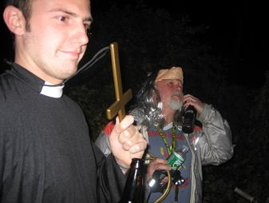
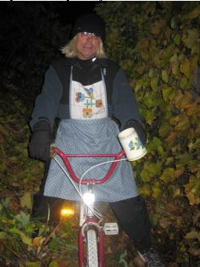
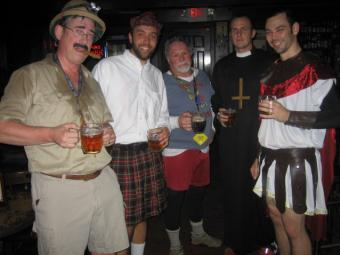
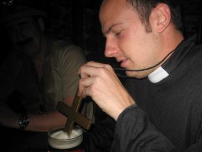
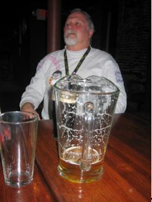
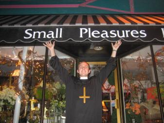
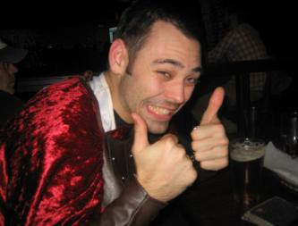
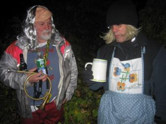
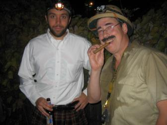

Halloween Hash
Run #1074, October 30, 2006
Hare: Amish It Head (Scottish Pirate)
Location: Providence, RI
Weather: High 40’s, Clear
Present: Dr WHO (Captain Spaulding), Justin My Ass (Glad-he-ate-her), Eenie Weenie Dick (Evil Priest (with Small Pleasures)), Bondo Jovi (as Shine On), WIPOS (Evil Bicycle Schoolgirl).
The Run:
For the second week in a row, the RIH3 rejoiced in the absence of Basket, Dry Foot, Oozing and Fuwangi, who remained off in the Far East experiencing new forms of debauchery. For Halloween, our hare promised more of the old forms of debauchery. Expectations were low. Expectations were met. The group gathered in a parking lot off Holden Street, behind the Foundry near Providence Place.
The costumes were confusing. Perhaps there was a cinematic theme. The hare got lazy and wore a kilt. The hare likes kilts. (Bravefart?) WHO got pithed. (WHO could recognize Groucho Marx in “Animal Crackers”. Every one else was looking for a stingray barb in WHO’s chest. Since when did the Crocodile hunter wear a pith helmet?) Eenie Weenie Dick chose a priest outfit with inverted cross. (Very Giallo!) (For those ignorant non-illegal-film-downloading wanks, see: http://www.braineater.com/misc/giallo_intro.html .) Justin My Ass chose a roman soldier/gladiator outfit. (Saturday morning and nothing to do? Try a Steve Reeves Movie!) Bondo? Not a clue. (Perhaps he was trying to evoke the heroine in “Barn of the Blood-Eating Llamas”. It wasn’t a success.)

Promptly at 6:30, they were off. Trail led downhill on Holden, and as was obvious, turned left under 95 and the mall. WHO led, closely followed by EWD and JIMA ,. They crossed Francis St. and without missing a beat, proceeded into Waterplace. The trail crossed the river. JIMA went straight for Union Station Brewery. The more upscale WHO tried the Capitol Grille. EWD waited while Bondo and the hare proceeded down along the south bank of the river. They regrouped at Memorial Boulevard.
After some brief attempts to find trail at the base of College Hill, they continued along the water, and then turned back to Kennedy Plaza. A check at the skating rink sent them southwest on Westminster to a series of very annoying and unnecessary checks. Ultimately, they crossed past Johnson and Wales, and came over to Point street. They crossed the bridge. Pretty much together, they turned up Wickenden, and ended up at the Wickenden Pub for the Beer Check.
Meanwhile, back at the cars, WIPOS had arrived. (As near as could be ascertained, he was dressed as Yvette Mimeaux in “Where the Boys Are”.) He got on his cycle and tried to catch up. He never made it beyond Kennedy Plaza.

The Wickenden Pub was empty except for the hashers and one young lady who, after taking some pictures for the group, listened to a few songs. She was not tempted to join the group. She left muttering something about going to see her therapist. The bartender suddenly became very busy in the back. So the hashers had the place to themselves. This was good, because WHO was starting to smell a bit.



Finally, they were on out, the hare running low on cash. Trail turned north on Hope, past another photo op for the Eenie Weenie one,

and then skirting Brown University, came down to cross the river again near the Capitol Building. They made their ways back to the cars and met WIPOS.
The circle was held in some ivy adjacent to the parking lot. Ratings for the run: despite the pavement, the lack of shiggy, the lack of bimbos and the presence of Bondo, the lack of Basket, Dry Foot and Fuwangi more than guaranteed positive numbers. Total: +6.9!

Hashit: This was a tough choice, between Bondo and WIPOS,

but ultimately WIPOS was triumphant. The circle concluded, and they moved on to The Wild Colonial. Another fine time was had by all.

On On